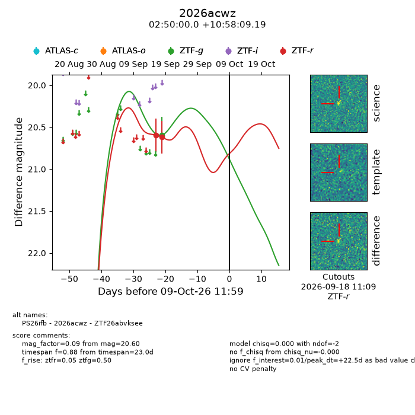
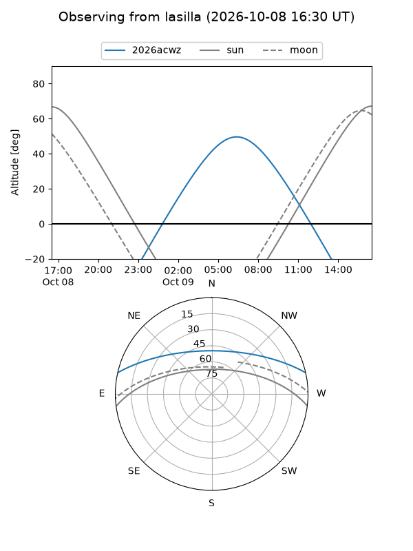
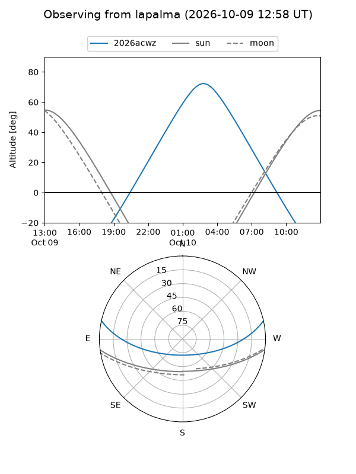
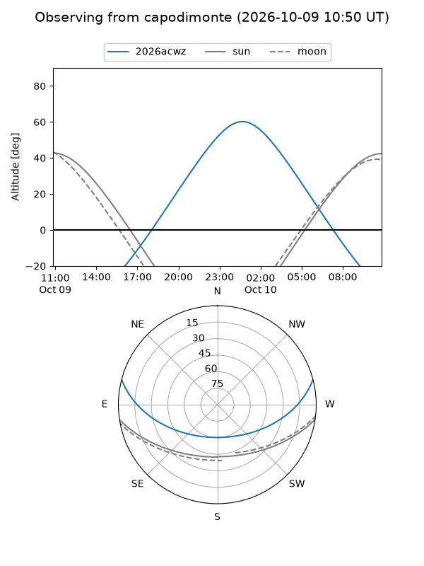
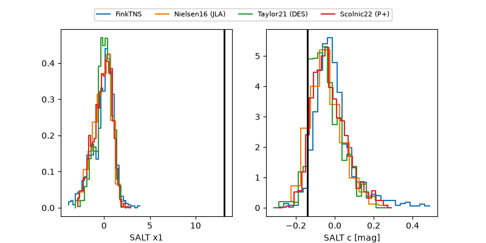

2026acwz
Target 2026acwz at 2026-10-09 12:01
Aliases and brokers:
FINK-ZTF: ztf.fink-portal.org/ZTF26abvksee
Lasair-ZTF: lasair-ztf.lsst.ac.uk/objects/ZTF26abvksee
ALeRCE-ZTF: alerce.online/object/ZTF26abvksee
YSE-PZ: ziggy.ucolick.org/yse/transient_detail/2026acwz
TNS name: wis-tns.org/object/2026acwz
Direct TNS query: direct search
alt names
ZTF26abvksee (ztf,fink_ztf)
2026acwz (tns,yse)
PS26ifb (panstarrs)
Coordinates:
equatorial (ra, dec) = 42.5001,+10.96922
equatorial (HMS+DMS) = 02:50:00.01,+10:58:09.19
galactic (l, b) = (163.9373,-42.27041)
Flags:
peak dt: +22.5
Photometry:
last ztfg=20.60, ztfr=20.62
1 ztfg, 2 ztfr detections
Lightcurve

Visibility



Additional plots
